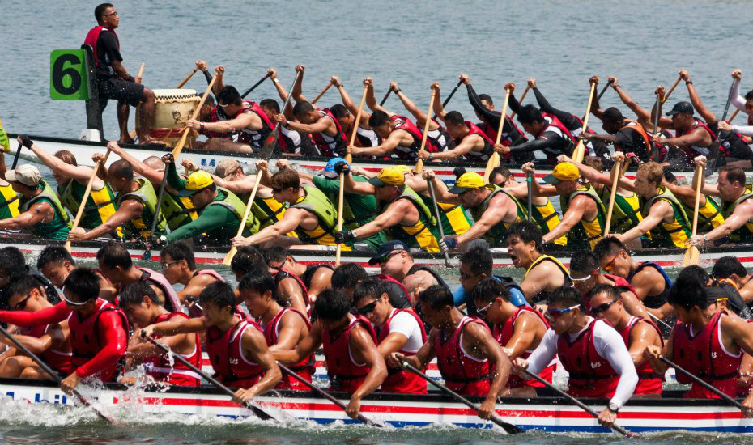
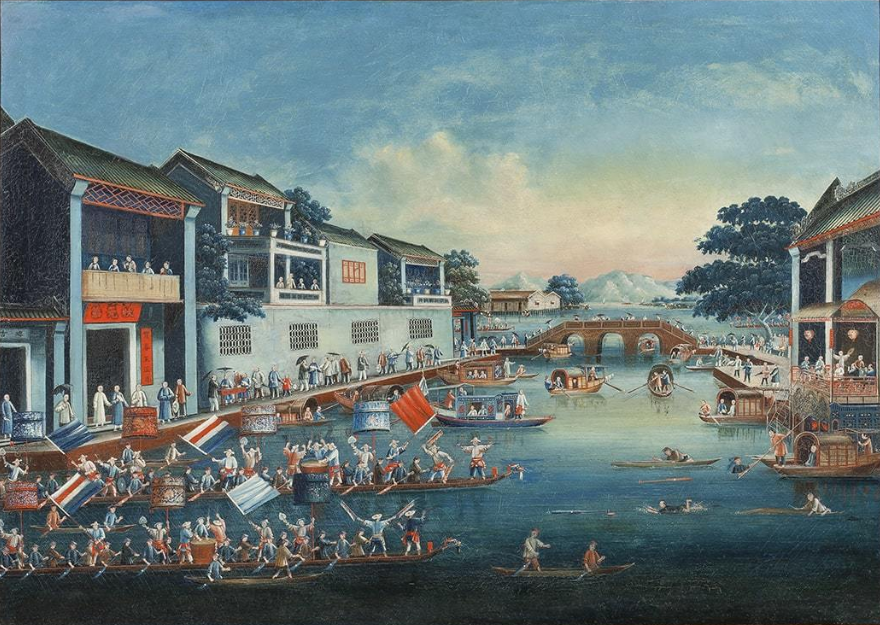
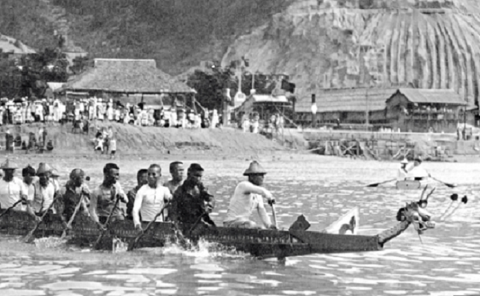
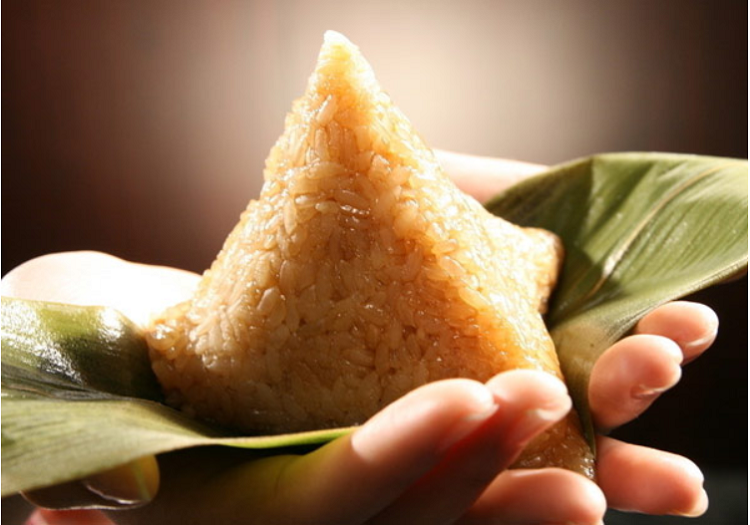
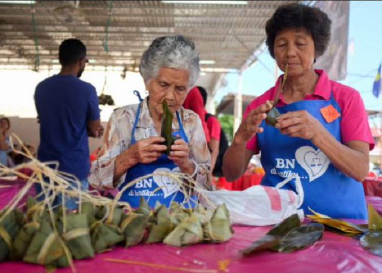
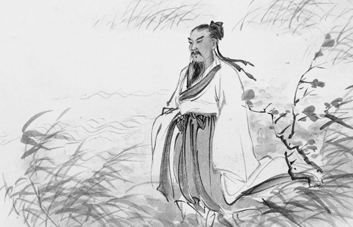

Introduction to Dragon Boat
Dragon boat racing is one of the most popular sports in the world.
Though the origin of the sport is in Asian countries, many Non-Asian
countries are also taking interest in this sport. From a study report
it has been found that in China, 250,000 people gather to enjoy the
dragon boat racing every year. Out of which 50,000 people come to see
from the practise time itself. This is not a race of individuals;
rather it is teamwork where a large group of people generally between
20 and 50 sail a boat by paddling. Similarly other teams also participate
in the race. The team whose boat’s dragon nose touches the finishing line
is declared as winner. Both men and women can participate in this sport.

History & Culture
Dragon Boat Racing originated in China and its history goes back more than
2000 years. The first people to participate were superstitious Chinese
villagers who celebrated the 5th day of the 5th lunar month of the Chinese
calendar. Dragon boating was held to avert misfortune and encourage rains
for prosperity. The main object of their worship was the dragon, hence the
name ‘dragon boat racing’.
1 / 2

Drawing of a Dragon Boat event
2 / 2

An olden-days Dragon Boating Festival held in China
❮
❯
The story of dragon boats evolved over the years and it involved the famous
poet Qu Yuan who threw himself in the Miluo River after being framed and realising
that his motherland has been damaged. He felt so much upset and sorrow about
his country that on lunar May fifth he ended his life. This tragic event transformed
into a festival where people paddled boats to drive fishes away and fed the water
creatures with Zongzi (Chinese rice dish wrapped in bamboo leaves) so that
Qu Yuan’s body would not become their dinner.
1 / 3

A traditionally made ZongZi (or Bak Zhang)
2 / 3

Two Senior ladies skillfully wrapping Zong Zi
3 / 3

A drawing of Qu Yuan
The legend of Qu Yuan became a well-known
story in China and other Asian countries and now the Dragon Boat Festivals are a popular
sport event enjoyed in all parts of the world.
Training Regime, Physical Health and Diet
Training Regime and Physical Health
Paddling a dragon boat doesn't seem too difficult on the surface for most. How simple is it?
Here’s a start, you dip the wide end of the paddle into the water and pull - what is so difficult about that?
You can say that about many sports: what’s so difficult about running, cycling or any other sport, for example?
The simplicity of many sports masks the amount of total body conditioning that is required for an athlete to
be competitive.
Speed is acquired through both strength and endurance.
The explosive power you need in a race comes from having strong muscles and well-conditioned lungs.
A properly conditioned body is also the best defense against injuries.
So how do we go about training in order to build up our strength and endurance?
Simple, Our bodies require a molecule called ATP to use as fuel in order to do work.
Depending on the nature of this work and the urgency in which the fuel is required,
we can produce this ATP in;
Firstly, small amounts but relatively quickly without oxygen
to power high-intensity exercise. When your body performs high intensity exercise, it says
“Hey, I need a LOT of energy and I need it NOW.” This characterizes anaerobic metabolism.
Secondly, in larger amounts but relatively slowly with oxygen for exercises that last
longer periods of time. Since we don’t accumulate ATP as quickly, our bodies use this
method for moderate intensity work and we can stretch this work out over long durations.
Producing ATP with the use of oxygen characterizes aerobic metabolism.
In order to train our aerobic and anaerobic metabolism, we just have to run A LOT.
Running is an effective cardio exercise. No equipment needed other than a good pair
of running shoes.For an advanced running exercise, there is a routine called ‘interval training’.
After warming up, run and gradually increase your speed to near-sprinting. Sustain the high speed
as long as you can. When you could no longer sustain the speed, drop the intensity immediately to a
slow jog for about half a lap or 200 meters. (If you are doing this for the first time, you might
substitute slow jogging with power walking). This is your "recovery period". Then start running to a
near sprinting speed again. Alternate the fast and the slow phases for a total distance the same as
you would run in continuous training.